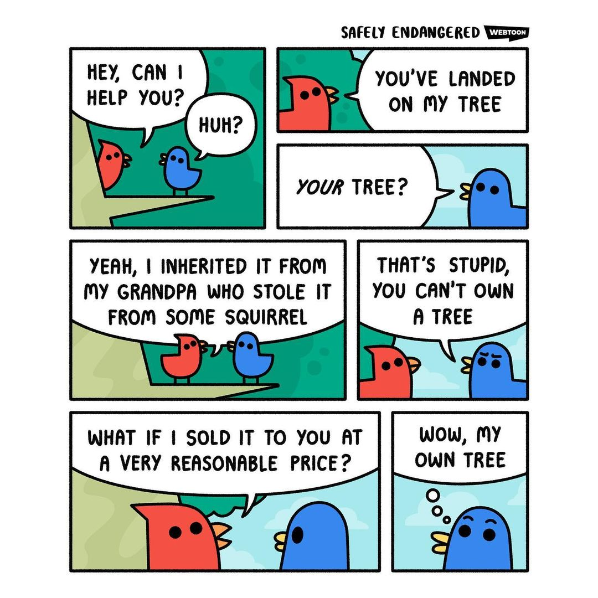
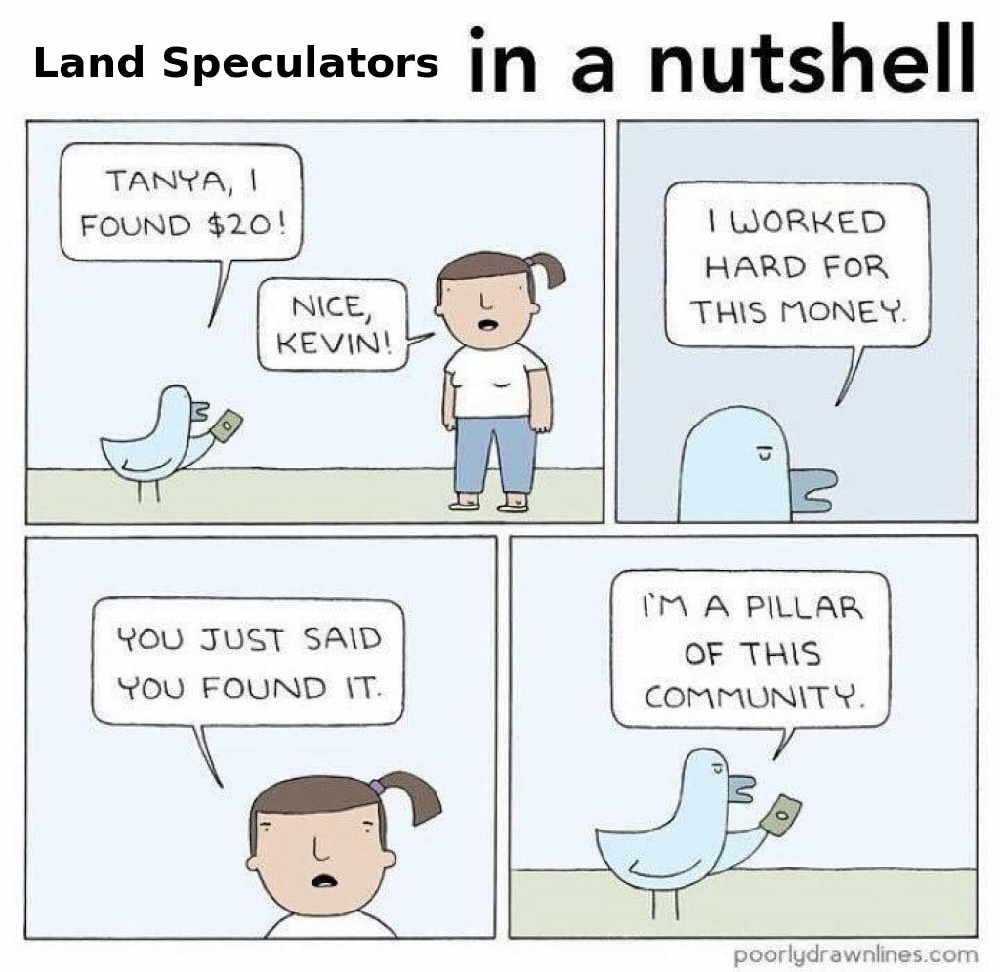

What is Objectivism?
Table of Contents
- 1. Summary Of Objectivism
- 2. Most People’s Criticisms Of Objectivism And Why They’re Wrong
- 3. Introduction To This Critique
- 4. Objectivism Promotes Naive Epistemology
- 4.1. Why Aristotle’s Axioms And Ayn Rand’s Axioms Are Very Poorly Chosen
- 4.2. Ayn Rand Failed To Use Clear Definitions And Semantics In Her Philosophy
- 4.3. Ayn Rand Didn’t Understand The Subject-Object Dichotomy And Its Implications
- 4.4. The True Structure Of Knowledge
- 4.5. Ayn Rand Didn’t Have A Good Philosophy Of “Truth”
- 4.6. Ayn Rand Was Wrong About Free Will, Materialism, and Reductive Physicalism
- 5. Objectivism Doesn’t Use Applied Biological and Evolutionary Reasoning
- 5.1. Ayn Rand Didn’t Understand Why Life Evolves To Be Selfish
- 5.2. Ayn Rand Didn’t Understand The Nature Of Emotions And Why They Exist
- 5.3. Objectivism Denies Race Realism, a Scientifically Backed Position
- 5.4. Cornucopianism is Wrong. Overpopulation is a serious concern
- 5.5. The Immortal Robot Thought Experiment Arrives At The Wrong Conclusions About Axiology
- 6. Objectivism Promotes A Naive Political Philosophy
- 6.1. Ayn Rand Was Wrong About “Objective Morality”
- 6.2. Ayn Rand Was Wrong About Libertarianism
- 6.3. Ayn Rand Didn’t Understand The True Purpose Of Government
- 6.4. Ayn Rand Didn’t Distinguish Between Cooperation Versus Collectivism
- 6.5. Why Everybody Owns Land Equally
- 6.6. Land Value Tax is Justified
- 6.7. Why Georgism And Equal Land Rights Are Necessary For A Truly Free-Market Economy
- 6.8. Objectivists Think Technology Can Solve All Of Humanity’s Problems, But They’re Wrong
- 6.9. Objectivism Does Not Address Market Failures Like Planned Obsolescence
- 6.10. Anarcho-Objectivism: Why Is Objectivism A Net-Negative To Civilization
- 7. Conclusion
1. Summary Of Objectivism
Objectivism is the Philosophy of Ayn Rand. The lines below give a summary of the philosophy’s beliefs.
- I exist, I am aware, A is A. Nothing can violate these axioms and everything must obey the laws of reality.
- Reality is objective. Contradictions do not exist in reality. The supernatural must be rejected.
- The senses are the only means of perceiving reality and they are always valid (when coupled with reason).
- People have volition and they should be held accountable for their actions.
- Every second the brain runs thousands of calculations. Some of these calculations can be used to form concepts.
- Concepts are the abstract mental integration of properties, united by a specific definition.
- Sound reasoning is the only valid way to form objective knowledge about reality. Reason is grounded to reality and it is the only valid source of knowledge.
- Reason is a three step process consisting of sense perception, concept formation, and logic. Although humans can reason, proper reasoning must be learned by studying epistemology.
- Intuition is subconscious reasoning derived from the brain’s subliminal calculations. Since intuition is subconscious, humans must use conscious reasoning to make the implicit explicit.
- Emotions give life meaning, but they are not a valid source of knowledge. Without emotion, intelligent life is meaningless.
- Reason and emotion should exist in harmony to validate each other, but humans should always follow reason before emotion because reason is the only rational way to guide one’s life.
- All knowledge is based on the information that an individual has acquired about reality through sense-perception and reason. All knowledge is contextual within the context of reality.
- Implicitly stated in every scientific claim and discovery are the words: “According to all available evidence and knowledge, this is the correct conclusion”.
- There are four levels of certainty. Propositions can be impossible, possible, probable, and certain. Every individual is born tabula rasa.
- Evidence is necessary to deem an idea as ’possible’. If there’s no evidence, then it’s not possible.
- Claims and arbitrary ideas that do not have evidence (such as an all-powerful, all-knowing deity) are impossible.
- Reason is the individual’s primary tool of survival. The capacity to reason is what makes humans human.
- All life is goal oriented. The most objective values in life are derived from our need to live and survive.
- Every value must be a desirable goal that an organism strives to achieve. The alternative to not achieving any value is an undesireable outcome.
- Virtues are actions that obtain and maintain our values.
- That which furthers life is good. That which harms life is evil.
- It is necessary to see the world as black and white in order to have good ethics. Most people would never do something that is completely evil, so evil must begin in the grey areas.
- Therefore, we should only stay in the white areas and refuse to compromise into the grey areas. Likewise, the ends can never justify the means. And it is evil to show mercy for evil.
- Independence mandates that one must be able to think for oneself. Integrity mandates that one must hold true to their ideals.
- Actions are only virtuous if they further the individual’s life, but a rational being does not desire harming, manipulating, or exploiting others.
- Everyone must be judged by their actions so that we determine who is good and who is evil.
- Work is required in order to live. Pride is moral ambitiousness and the crowning reward of following good virtues.
- Capitalism is the only economic system that maximizes wealth and respects self-ownership and non-aggression.
- All rights are ultimately derived from the non-aggression principle. Positive rights don’t exist because they require the fruits of someone else’s labor.
- The only purpose of government should be to ensure that ethics, consequences, and the use of force are used correctly and objectively.
- Art is a selective re-creation of reality according to an artist’s metaphysical value-judgments.
- The goal of philosophy should be to discern objective reality and figure out how to live life on Earth.
2. Most People’s Criticisms Of Objectivism And Why They’re Wrong
Most people who criticized Ayn Rand and Objectivism criticize her support for selfishness, her condemnation of altruism, and her support for Capitalism and Libertarianism.
Most criticisms against Objectivism are naive and misguided about human nature, but this blog post is not your typical criticism of Ayn Rand and Objectivism.
3. Introduction To This Critique
For the record, I used to identify as an Objectivist myself, until I started thinking for myself and realizing that most of the philosophy’s tenants are fallacious. I talk about my philosophical journey in more detail here. I now disagree with Rand on just about everything, but there are a few things that Ayn Rand and I still agree on:
- There is no such thing as supernatural phenomena (including a supernatural God),
- The integration of Empiricism and Rationalism (Kant was actually the first major philosopher to do this, so that makes Ayn Rand’s claim that Kant didn’t contribute anything to modern philosophy even weirder),
- The standards for certainty, and arbitrary notions should be rejected,
- Rational egoism is the correct way to live (however we justify this differently, mine is more sound since it uses biological and evolutionary reasoning),
- Free markets and negative rights are good grounds for running a society (although she doesn’t truly support the negative equal right to land nor does she propose a method that is sufficient for preventing land monopolies),
- Her proposed ethical virtues of: independence, integrity, honesty, justice, productiveness, egoism (or selfishness as she calls it), and pride, and
- Most of what she has to say about aesthetics.
Aside from those things, I disagree with everything else in Objectivism, and this essay will back up all its claims with comprehensive arguments and links to other essays that go into more detail. To see my critique of the GroundedLibertarian.com, the site that I learned Objectivism from and caused me to first get interested in philosophy, see this post.
To be fair, it can be very easy to think that Objectivism is a good philosophy when someone doesn’t know much about philosophy to begin with, and I know what that’s like because Objectivism was the very first philosophy that I had ever read about it in great depth. The less someone knows about the world, the more amazed they will be upon discovering ideas that are unfamiliar to them. This is the same reason why Jordan Peterson has a lot of influence when his ideas aren’t very bright either to someone who is already a rational deep-thinker.
We have to recall that Ayn Rand only had a high school education and three years of post-secondary education at Leningrad State University (where most of coursework was in history), so she didn’t have a very good understanding of physics, chemistry, biology, mathematics, etc because she was never educated very extensively in those subjects to begin with. The development of Objectivism has thus suffered from Ayn Rand’s lack of further formal education beyond what she received. Two of the most glaring examples of this are: 1. she failed to recognize that the universe is deterministic and materialistic (proven by physics and chaos theory, a branch of mathematics), and 2. she didn’t incorporate any applied biological or evolutionary reasoning into her philosophy.
Now we shall begin the critique.
4. Objectivism Promotes Naive Epistemology
4.1. Why Aristotle’s Axioms And Ayn Rand’s Axioms Are Very Poorly Chosen
To quote from the Ayn Rand Lexicon page on Axioms:
An axiom is a proposition that defeats its opponents by the fact that they have to accept it and use it in the process of any attempt to deny it.
Basically, Ayn Rand considers an “axiom” a useful proposition for building a foundationalist theory of epistemology that can be proven by performative contradiction. The fact that she didn’t use the term “performative contradiction” is indicative of her philosophical illiteracy, even though it’s a widely used term in epistemology. And if she was trying to choose a set of performative contradictions for proving the axioms of her philosophy, then she did a very poor job at that for several reasons.:
- For starters, the Axioms of Classical Logic are a far superior axiomatic system for philosophy.
- She made a good third axiom (“A is A”), but she formed the Law of Non-Contradiction (LNC) as a corrollary of the Identity Axiom.
- The LNC is supposed to be a separate axiom. In order to establish the LNC from the Identity Axiom, you have to assume (or implicitly assume) what you’re trying to prove.
- If “A = A” is the only premise that you have, “A ≠ ¬A” can not follow from only that premise because you don’t have enough information (or axioms). That’s why “A ≠ ¬A” is an axiom.
- The proof “A = A, thus A ≠ ¬A” does not conclude “A ≠ ¬A” unless you implicitly assume “A ≠ ¬A”. In Rand’s case, she implicitly assumed “A ≠ ¬A”.
- She probably didn’t realized that she implicitly assume “A ≠ ¬A” since it’s so axiomatic.
- Not only that, but the Law of the Excluded Middle has not been established yet, so the metaphysical concept of “¬A” and the propositional concept of “false” have not been established yet.
- The LNC is supposed to be a separate axiom. In order to establish the LNC from the Identity Axiom, you have to assume (or implicitly assume) what you’re trying to prove.
- Even weirder, even though the LNC is supposedly a corollary under her system, she claims that it can be used to prove the first two axioms.
- That would mean that the LNC isn’t really a corollary.
- It would also conclude the the first two axioms are actually supposed to be corollaries instead.
- A true axiom is supposed to be something that cannot be proven, but is presupposed to form knowledge. As such, it shouldn’t be possible to prove an axiom by proof by contradiction.
- She forgot two of the axioms of classical logic, and she didn’t state the Identity Axiom first.
- Her Axioms only work in Metaphysics. By contrast, the axioms of classical logic have both metaphysical and propositional versions of themselves.
- Her insistence that her first two axioms are valid relies on using proof by contradiction by assuming the opposite of those two “axioms”, and showing self-refutation.
- This doesn’t work without first establishing the Law of Identity, the Law of the Excluded Middle, and the Law of Non-Contradiction beforehand, in that order.
- She didn’t state the other five performative contradictions together with the first two. There are no good reasons why shouldn’t all be stated together.
- Her explanations about what an “axiom” also contributed making this all more confusing.
- In one part she claimed that axiom is something that can’t be proven because it’s self-evident.
- And in another part, she claimed that the axioms can be proven when denying them creates a contradiction (proof by contradiction).
- Either axioms can be proven, or they cannot be proven.
- When Ayn Rand argues that it is necessary to deny materialism, accept the validity of the sense, accept the existence of free will, and deny the arbitrary in order to do anything within the next fields of philosophy (epistemology, ethics, and so forth), she is adhering to coherentism rather than foundationalism, even though her philosophy accepts three basic beliefs (albeit poorly chosen ones). She argues that if we use the next fields of philosophy, then it would be contradictory to accept the negation of each of the propositions listed in the first sense of this paragraph.
Moreover, the human mind does not begin with these axioms when it begins to understand the world around it. Aristotle’s axioms are only useful when a human mind sufficiently processes the world around itself, and starts over with just the axioms and builds upon that step by step.
4.2. Ayn Rand Failed To Use Clear Definitions And Semantics In Her Philosophy
Ayn Rand claims that “God” doesn’t exist, without ever defining “God”. You have to define what you’re talking about before you can claim that something doesn’t exist. Theological Non-Cognitivism is a more general position that asserts that whether or not “God” exists depends on how “God” is defined. Read more: Theological Non-Cognitivism
Ayn Rand never defined free will. It is necessary to have multiple definitions of Free Will in order to clear up most of the semantics that muddle making progress on this ever-ongoing debate.
Ayn Rand’s definition of “concept” relies on the definition of “property”, but she never defines what a “property” is. A more coherent and non-circular definition for concept is: “Anything or any idea that the human mind can think about.” Read more at: Philosophical Foundations Part 1A: Knowledge and Concepts
Why not say “Egoism” rather than “Selfishness”, when the latter term has negative connotations and is typically associated with the wrong definition that we want to convey?
Lastly, Ayn Rand wasn’t mindful that the Sapir-Whorf Effect has a huge potential to influence and affect thought. The linked essay shows many applied examples of how that happens in everyday speech.
4.3. Ayn Rand Didn’t Understand The Subject-Object Dichotomy And Its Implications
Understanding the Subject-Object Dichotomy and its implications is very important for forming an accurate and coherent philosophy and understanding of the world.
The conditions of being a subject within objective reality:
- Biological Desires for sustaining the subject’s life.
- Truth/Knowledge that provides only a limited scope of reality.
- Free Will (Deterministic as an object, “free will” as a subject)
- Limited lifespan with eventual mortality where all biological processes cease to continue
- Designed to reproduce
| Subject | Object |
|---|---|
| Knowledge / Truth | Reality |
| Free Will | Determinism |
| Value | Material Things |
| Consciousness | Materialism |
Read more: What is Subjectivity?
4.4. The True Structure Of Knowledge
Knowledge is structured according to Empirically-Grounded Coherentism, not Foundationalism. There are several problems with believing that knowledge is structured according to foundationalism instead of coherentism.
Read more: Why Knowledge is Not Foundationalist.
Also note that there is no straight-forward answer to whether the mind is tabula rasa or not: Evaluating Tabula Rasa.
Lastly, Ayn Rand’s Philosophy doesn’t talk about important reasoning skills (RSs), fluid vs crystallized intelligence, different types of intelligence, etc.
4.5. Ayn Rand Didn’t Have A Good Philosophy Of “Truth”
Ayn Rand believed that it’s possible to have direct knowledge of reality, but this is false. All Objectivists have subconsciously adopted the Correspondence Theory of Truth, but they never bothered to question whether it’s actually right or not.
To put it most concisely, the reason why objective truth does not exist is that it’s not possible to have absolute, omniscient knowledge of reality. Therefore, conscious minds can only have subjective, perspective-dependent models of that objective reality. No proposition can ever be truly be labeled as “objectively true” because it’s always possible to be wrong about that said propositions if further knowledge of reality invalidates that proposition’s truth value assignment.
Truth is essentially the same thing as knowledge, because whatever people know is what they will assert to be “true”.
Read More: Philosophy of Truth
4.6. Ayn Rand Was Wrong About Free Will, Materialism, and Reductive Physicalism
Main Article: Free Will and Determinism
Ayn Rand argued that Free Will exists, but the way she defines “free will” and “determinism” are very vague and naive, and the ultimate conclusion she reaches about it is not well-supported by modern physics. Before we can even talk about this topic, we have to define some definitions for determinism and free will1 since these terms are all vulnerable to the Sapir-Whorf Effect:
- Determinism
- The doctrine that events are determined completely by previously existing causes. Determinism suggests that only one course of events is possible given the materialist configuration of the Universe at a given time t.
- Metaphysical Free Will (MFW)
- The doctrine that agents are able to make decisions independently of external factors. Zero Contradictions argues that MFW is false.
- Hard Determinism
- The doctrine that all events, including human action, are ultimately determined by causes external to the will of agents. In other words, Determinism is true, and MFW is false. Since Zero Contradictions argues that MFW is false, Hard Determinism is effectively the same thing as Determinism.
- Libertarian Free Will (LFW)
- Determinism does not exist. LFW is the exact opposition of Hard Determinism. Libertarian Free Will does not exist in reality, and can be disproven by proof by performative contradiction.
- Compatibilism
- The doctrine that Determinism and Metaphysical Free Will both coexist. Whether or not this is true depends on how the terms are defined.
- Epistemic Free Will (EFW)
- The ability of a subject to consciously choose to do what it wants, regardless of whether it can actually fulfill its desires or not, and also regardless of whether Determinism is true or false.
- Agency
- The satisfaction of two conditions that: 1. a subject can choose to do as it wants, and 2. it is able to do it within its current circumstances. Agency exists on a spectrum, from a subject not being able to accomplish any of its desires, to the subject being able to do everything that it desires.
- Power
- The same thing as agency.
- Desire
- To want something. Desire is a precursor to Epistemic Free Will because Desires are necessary for Values to exist. All sentient organisms have desires.
- Volition
- The same thing as Epistemic Free Will (EFW).
5. Objectivism Doesn’t Use Applied Biological and Evolutionary Reasoning
Objectivists tend to think that technology and innovation makes evolution obsolete, but they are wrong about this. Humans cannot transcend evolution. Humans are a biological species and we were created by evolution, so evolutionary theory applies to us just like all other living things.
The real reasons why humans are the dominant species (it’s not just our superior intelligence): Why Humans Are Dominant Worldwide.
5.1. Ayn Rand Didn’t Understand Why Life Evolves To Be Selfish
Again, Ayn Rand failed to apply any biological or evolutionary understanding to her philosophy.
Selfishness must ultimately be defended using evolutionary reasoning, but Ayn Rand didn’t use any evolutionary reasoning to defend selfishness because she wasn’t very knowledgeable. This is understandable because she didn’t have anything more than a measly high school education.
While she was right that selfishness is better than altruism, she didn’t apply the evolutionary reasoning why that is the case.
The Egoist Tendency For Humans To Justify Themselves: Whether everybody accepts it or not, they are an egoist acting to achieve their own values, whatever those may be. However, Rand has not addressed that humans have a tendency to justify themselves, their values, and their actions at almost every cost since everybody acts according to egoist reasons. Sentient organisms will justify themselves even if their justifications are inconsistent with other aspects of their internalized moral philosophy, and this can be especially seen in humans.
Even though Objectivists proclaim to be selfish, they’re all still mostly humanists at heart. They don’t understand life is intrinsically violent, they deny biological realism, they believe in recycled moral narratives, and they are oblivious to the negative consequences of technology.
Although Ayn Rand wrote that rationalizing is anti-virtuous and irrational thing to do, this statement condemning rationalization is only true when not dealing with ethics. Just about everyone will rationalize their existence if necessary because humans and animals alike all evolved to do that. Rationalizing is not anti-virtuous, it is part of nature, on principle of selfish genes and egoism.
5.2. Ayn Rand Didn’t Understand The Nature Of Emotions And Why They Exist
Emotions exist to make people better at reproducing and raising offspring. Emotions are needed to generate actions in the real world. Note that I am not saying here that we should put emotions before reasoning, or anything like that. I’m only explaining why animals evolved to have emotions, and the function of emotions, which Ayn Rand failed to do.
For example, romantic love does not exist merely to make you feel good or to be an expression of your feeling. Love exists because it made our ancestors more efficient at procreating and raising children who would live to adulthood to have children of their own. In the past, male and female organisms who didn’t have love or strong emotional bonds towards each were less likely to stay together to raise their offspring, which endangered their offspring’s probability of survival. On the other hand, animals who did evolve to a capacity to romantically love one another were more likely to stick together to protect their children from accidents and predators, thus increasing their reproductive success.
More generally, pain and pleasure are biological motivators that were evolutionarily developed to trigger and provide impetus for sentient organisms to do things that sustain their lives and reproduction. Read More: The Drive-Reduction Theory of Pain, Pleasure, and Motivation.
Another thing that she’s overlooked is that reason isn’t necessarily the only valid source of knowledge since evolutionary reasoning and natural intuition/instincts prove that emotions can also be a source of knowledge when it comes to ethics since emotions do partly serve the purpose of functioning as a moral accounting system. For that matter, natural fears such as spiders and falling from high heights should also be considered knowledge since they indicate to us that our ancestors had to avoid those things before they reproduced the next generation of humans, hence we should also avoid those things if we want to improve our odds of survival.
5.3. Objectivism Denies Race Realism, a Scientifically Backed Position
Race Realism: Race Realism is a subcategory of Biological Realism. Being a race realist means acknowledging that:
- Race is defined as “a statistical cluster of genetic variation characterized by phenotypic similarity”, and
- All the genes of the various races in the world occur at different statistical frequencies for each race due to all the different evolutionary and selectionary pressures that persisted in their ancestral environments for many thousands of years, and
- Race is often a categorization scheme for human beings based on phenotypic similarity.
That’s it. But you have to understand what a “statistical cluster” is, and what that means with regards to race and genetics, as well as understanding that racial differences are continuous, not discrete like the distinction between species. [Race Realism] ≠ [Racism].
Read More: Race Realism FAQs
5.4. Cornucopianism is Wrong. Overpopulation is a serious concern
The simplest way to disprove Cornucopianism (the opposite of Neo-Malthusianism) is to point out that it is absurd to insist that there can be infinite population growth within a finite environment. It was explained in this section that Overpopulation depends on much more than just the number of organisms. Of course, Cornucopians will argue that humanity will invent new technologies and better economic policies that will expand the carrying capacity, but that arguments has been debunked in this section.
Moreover, just because we haven’t faced overpopulation yet, that doesn’t mean that it will never happen. Malthus being wrong does not automatically make the Cornucopians right, because there will always be more ways to be wrong than there are to be right. One could point out that the world population has never declined since the beginning of the Industrial Revolution and has been able to support most/all of Earth’s inhabitants for the last 200+ years, but a similar series of numbers for house prices in 2006 could show that house prices always go up… until they didn’t in 2008.
Anybody who claims that we will never have to worry about overpopulation might as well say “I haven’t died yet, therefore I will never die”. Everybody knows that life cannot live forever, and likewise, everyone ought to know that infinite growth is impossible within a finite environment.
Also see:
- What will happen if we don’t regulate the world population?
- Don’t countries with declining populations like Japan or Russia prove that human populations aren’t bound to increase towards infinity?
- Won’t rising living standards solve overpopulation?
- Why is there currently a negative correlation between wealth and fertility rates?
- Why should we worry about overpopulation when birth rates are decreasing around the world?
- But humanity is nowhere close to overpopulation.
Read More: Overpopulation FAQs.
5.5. The Immortal Robot Thought Experiment Arrives At The Wrong Conclusions About Axiology
Rand’s thought experiment of imagining an immortal and invincible robot and using that to make conclusions about value is inelegant and unnecessarily complicated, and it doesn’t even manage to arrive at the right conclusions about axiology. A simpler thought experiment that arrives at the same conclusions and provides better insight would be to imagine a universe that has no sentient life at all. This thought experiment takes less explaining to get the point across, and it is more readily apparent that all value ultimately originates from sentient life, hence a universe with no sentient life is a universe with no value at all.
If there is no sentient life in the universe, then there is no Value either. It follows that all Value ultimately originates from sentient beings and their perspectives on reality. Since Value is necessarily perspective-dependent from the viewpoint of sentient being(s), it is thus impossible for Value to be objective by the definition of “Objective”. “Objective Value” is therefore an oxymoron.
Moreover, recognizing that value must originate from the subjective perspectives of sentient organisms goes a huge step forward towards proving a very important and undeniable fact that Rand was never able to recognize: that all value is subjective. Since her thought experiment is less useful and more complicated, it doesn’t contribute anything new to the field of philosophy.
Morality is based on Value. If Objective Value doesn’t exist, then it is necessarily the case that objective morality cannot exist either. Morality is therefore subjective since it is based on Value, which is based on the perspectives(s) of sentient life. QED.
Moreover, although it is case that most humans intuitively derive their purpose and meaning from doing things that sustain their lives (the power process), that doesn’t necessarily make it the objective purpose in life for all humans because there is no uniquely rational way to define value philosophically. To illustrate this, if we were to ask: “What is the right theory of value?”, then we would need a theory of value in order to answer the question because it’s a normative question. But we can’t use a theory of value to answer the question if we haven’t already established the right theory value that we should use. This infinite regress demonstrates that there is no foundation for value in philosophy.
At most, we can define a theory of value and use it to justify itself, hence one reason why life and reproduction are intuitively good values. However, that still doesn’t conclude that life is the objective value. As a counter-example, Efilists could value exterminating all the life on Planet Earth, and they could justify it with reasons that many people would find appealing.
Read More: What is Value? - Blithering Genius
Read More: life and reproduction are intuitively good values.
6. Objectivism Promotes A Naive Political Philosophy
6.1. Ayn Rand Was Wrong About “Objective Morality”
Reason can not serve as a basis for morality because the true basis for morality is value, as established in the last section, which is inherently subjective. Moral relativism is a corollary that follows from this, this theorem is a very big deal because it leads to very, very different conclusions. Proving the subjectivity of morality debunks the entire foundation of the Objectivist theory of ethics, to the point that everything must be re-thought from the ground up. Although a lot of the ethical and political philosophical proposals end up the same in the end, they end up that way for different reasons, and it is especially important to understand why they are the way they are.
It is also a huge mistake to view morality as black and white. Even if morality were objective, there’s far more ways to be wrong than there are ways to be right, so anybody who merely thinks that they are imposing supposedly objective morality is actually probably wrong. Many people would also use their belief that they are imposing the one and only true “objective” morality as a justification to rule with an iron fist.
There’s no such thing as collective entities.
This is demonstrably false. Objectivists just define “collective entity” as something that is impossible to exist. Their mantra is “there’s only individuals”. But it’s obviously useful to think about and understand the world as having much more than just individual entities, so the mantra falls apart pretty quickly. Stating examples of collective entities (e.g. the United States government, Ford Motors, the Free Software Foundation, etc) and examples of collective values among collective entities is enough to prove that collective entities and collective values do exist. Asserting otherwise is just moral dogma.
Read more: Post-Overton FAQs.
6.1.1. A Fiercely Individualist Conception Of Morality Is Incompatible With Most Cultures
Most Libertarians are inclined to insist that race doesn’t matter, that “there’s only individuals”, that race realism is pseudo-science, and that race and genetics don’t matter for how individualistic, intelligent, hard-working a person can be, but there are several problems with believing this:
- Most academic research is fake, so whatever academia has to say race realism cannot be trusted.
- It would be contradictory to simultaneously understand evolutionary theory, to insist that racial differences don’t matter, and to refuse to apply evolutionary theory under the ideological dogma that racial differences shouldn’t matter. The hard fact is that race and genetics do matter.
- Metaphysical Free Will does not exist. Due to the Metaphysical Nature of the Universe, everybody’s destiny is already predetermined, and this section contains a good, concise list of reasons why that is the case.
- Prioritizing the an individualist moral code that emphasizes freedom above everything violates Hume’s Guillotine, that is: What ought to be cannot be deduced from what is. Even if an ultra-individualist society where race doesn’t matter might be favorable to Libertarians, that doesn’t mean that such a society is destined to arise.
- Most of the World’s Cultures are not inclined towards individualism (more on this in the next two paragraphs).
There is plenty of evidence to prove that genes are the main factor controlling how individualist a person’s personality is. In the serotonin transporter gene for example, East Asians are significantly more likely to have the short “S” allele compared to Europeans who are relatively more likely to have the longer “L” allele, which may be a contributing factor to the more collectivist culture in East Asia versus the more individualist culture in Europe. Source
Read More: Individualism, And The Problem With Idealizing It Too Far
6.2. Ayn Rand Was Wrong About Libertarianism
Aggression is subjective, so the Non-Aggression Principle is also subjective. When different countries all define “aggression” differently, it’s no surprise why different countries have different laws.
6.3. Ayn Rand Didn’t Understand The True Purpose Of Government
The first and foremost goal of government is to resolve Prisoner Dilemmas and Tragedies of the Commons. Government comes from the necessity to create a reasonable set of laws that would create a societal framework from which selfish individuals can cooperate together for greater mutual gain (than if they didn’t cooperate together). Cooperation is the foundation of civilization, and the best legal code is the one that enables that to the greatest extent possible.
Read More: Libertarians Neglect Game Theory
6.4. Ayn Rand Didn’t Distinguish Between Cooperation Versus Collectivism
While Rand was right to denounce collectivism, she didn’t address how cooperation is an extension of selfishness, nor did she explain how leftists tend to conflate cooperation with collectivism as a way to fallaciously advocate for collectivism.
Read More: The Difference Between Cooperation Vs Collectivism
6.5. Why Everybody Owns Land Equally
If someone steals something and sells it to someone else, then the transaction is not valid because people cannot trade things that they don’t rightfully own, and that property has to be returned to the original owner. Similarly, it makes no sense to buy, sell, and trade land since all land was eventually stolen at some point by the ancestors of one of the people making the trade.
But if a landowner has to pay taxes on their land, then they don’t truly own it.
Correct, they don’t truly own it. The rightful owners of the Earth’s land is (collectively) everybody:
- If someone steals something and sells it to someone else, then the transaction is not valid, because people cannot trade things that they don’t legally own.
- If stolen property is used within a transaction, then the transaction is invalid, and the property has to be returned to the original owner.
- All land was stolen at some point in human history.
- All landowners either stole their land from someone else, or they bought their land from someone who bought/inherit/stole it from someone else who got it from someone else and so on. The last person at the final end of the transaction stole that land.
- Before land was ever privately owned by anybody, land was not owned by anybody, which is essentially the same as everybody owning the land equally.
- Everybody was therefore the original owners of the Earth’s land.
- If the land was initially stolen, but also passed onto today’s owners through a combination of inheritance, theft, and trade, none of those transactions were valid because stolen property was used in the transactions, as established in [1].
- The land should therefore be returned to its original owners: Everybody.
Occupying land prevents other people from using it. If land is owned equally, then a person who fences off land to prevent other people from using it (without giving due compensation) is effectively stealing that land from the commons.
But if everybody owns land equally, then that must be the same thing as nobody owning any land at all?
Technically yes, but that does not constitute an argument against equitable land ownership. Georgism still solves the Tragedy of the Commons with respect to land because Georgism explicitly allows private possession of land.
|  |  |
6.6. Land Value Tax is Justified
The only reason why Ayn Rand was ever opposed to taxation in the first place was because it deprives people of the fruits of their labor. But land is not created by labor, so LVT is not a true tax and is actually a misnomer since Land Value Taxes don’t deprive people of the fruits of their labor (when only the unimproved value of the land is taxed, otherwise it would be called a property tax). After connecting these two facts in my mind, I had to seriously question why I was against Land Value Tax at all in the first place, and it created cognitive dissonance for me:
- Taxation is slavery with extra steps if it deprives people of the fruits of their Labor.
- Land is not created by Labor.
Conclusion: Land Value Taxes are not theft nor slavery because Land is not created by Labor.
After I realized this, I started seriously investigating Georgism and why some people supported it, and now I’ve been Georgist ever since.
Read More: Georgism: What and Why.
6.7. Why Georgism And Equal Land Rights Are Necessary For A Truly Free-Market Economy
Having an equal right to land is a negative right and is necessary for a truly free-market economy, and this can be proven by at least a few completely different syllogistic reasoning processes: GeoLibertarian Arguments
The Georgist Theory of Property (GTP) can be stated using the following syllogistic reasoning:
- Every person owns themself.
- Every person thus owns the labor that they produce.
- Every person thus owns anything produced by their labor.
- People can trade things that they create with their labor for things that other people create with their labor.
- Land is not created by labor.
- But land is necessary in order to be productive (because it’s one of the three factors of production: land, labor, and capital).
- In order for everybody to have an equal right to be productive2, everybody must have an equal right to land.
- In order to have a free-market economy, everybody must have an equal right to be productive2, otherwise the economy is anti-free-market.
Conclusion: In order to have a truly free-market economy, everybody must have an equal right to land. Likewise, no one should have unchecked ownership of land because they did not create the land, lest the economy be anti-free-market.
6.8. Objectivists Think Technology Can Solve All Of Humanity’s Problems, But They’re Wrong
Humanity will never run out of problems. The problem with solving third-world problems with technology is that many simultaneous technological changes, malevolent actors, and evolutionary mismatch make it so that technology creates just as many problems (first-world problems) as it solves. And frankly, the new ones are just as bad as the old ones (if not now, then eventually), and arguably worse in some cases. People tend to be more oblivious to the downsides of technology than they are to upsides.
Read more: Philosophy of Technology.
6.9. Objectivism Does Not Address Market Failures Like Planned Obsolescence
“Capitalism” isn’t the be-all end-all solution to economics.
The Problem of Planned Obsolescence
The right-to-repair is enormously important for preventing planned obsolescence in many cases, and it is best guaranteed by government regulations.
6.10. Anarcho-Objectivism: Why Is Objectivism A Net-Negative To Civilization
Although Rand was a harsh critic of Anarcho-Capitalism, many of her followers are Anarcho-Capitalists since Objectivism is a gateway into believing in Anarcho-Capitalism. Anarcho-Capitalists are just as ignorant about human nature as Communists are, and their political ideology is equally dangerous to Modern Civilization. Many of them will be reading this critique, so this has to be addressed.
Even I myself had fallen into this cult since I used to be an Anarcho-Objectivist for about ~2 years, until I eventually rejected it.
Although Ayn Rand may have been explicitly opposed to Anarchism and Anarcho-Capitalism, Objectivism still frequently incubates Anarcho-Capitalists since Objectivism is a Libertarian philosophy that is in favor of absolutist moralizing. The Anarcho-Objectivists are a case of purity spiraling among the Objectivist community. For that reason, Objectivism is a net-negative to civilization because Ancaps are, by far, more opposed to Georgism than literally every other political ideology out there, and are thus the greatest opponents to solving the greatest economic problems that are facing the modern world. This means that even though Objectivism is supposed to advocate for a very pro-free-market philosophy, it ironically (albeit indirectly) promotes an extremely anti-free market philosophy since it’s not possible to have free markets at all without a government to establish them, nor is it possible to have free markets without equal negative land rights for everybody.
Read More: The Problems Concerning Polycentric Law
7. Conclusion
Objectivists are not deep-thinkers nor good philosophers. The people are on r/Objectivism like to pretend to be enlightened people who are good at philosophy, when in actuality, they’re all just normies who are of average intelligence, are bad at philosophy, and lack critical thinking skills. Maybe that’s rather harsh to say, but I really, really don’t see any original, creative, or novel thinking or information spreading on that forum or on any other Objectivist websites, forums, or Youtube channels. I only see people parroting quotes and definitions verbatim or Objectivists fighting over typical moral questions, with almost no one (if anybody) doing any real thinking in those online circles. And when other people do rightfully point out the flaws in Objectivism, the Objectivists will typically respond by turning the discussion into a debate over why they think their poorly thought out definitions are better than the opposition’s. They don’t know how to think outside the semantic framework that they learned, and it confuses them when other people can or when other people don’t use the same definitions as they do.
Objectivists usually discovered Ayn Rand’s Objectivism by reading fiction novels, and people who are introduced to philosophy via that way tend to not be intellectuals to begin with, statistically speaking. Deeper philosophical thinkers either do their own serious thinking, and/or they read expository works to introduce themselves to other ideas.
There’s also a filter effect at play here too. The smarter Objectivists don’t tend to stay Objectivists forever, so they eventually reject the philosophy just like I did, and the pool of actual intellectuals (if any) within the Objectivist Community grows ever smaller.
It is a shame that tens of millions of dollars are wasted every year promoting Objectivism by the Ayn Rand Institute and the Atlas Society, when all that money could be spent promoting quality philosophy and creating truly rational thinkers for tackling the greatest problems of the 21st century.
Nevertheless, I do agree with Objectivism on this list of bullet points that I wrote in the introduction. Although I’m clearly not a fan of Ayn Rand’s philosophy, I would say that she had a better philosophy than most of the humans or philosophers who had ever lived prior to the creation of the Internet.
Footnotes:
The noun phrase “Free Will” tends to be categorized more often as an epistemological concept, whereas determinism is seen more as a metaphysical concept. But “metaphysics” is a rather misleading concept to begin with since it leads people into believing in Platonism, for which there isn’t very strong evidence to support.
Having an equal right to be productive means having an equal opportunity to be as productive as anyone else.